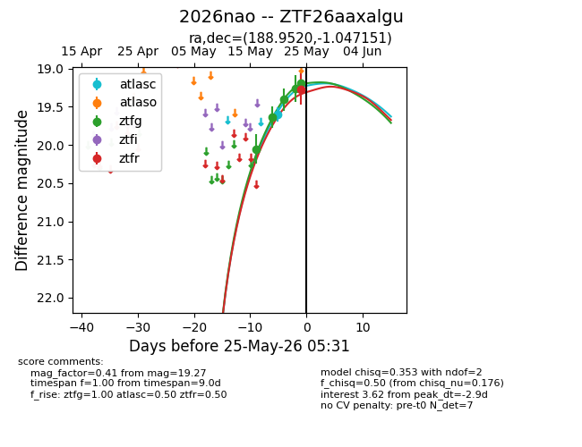
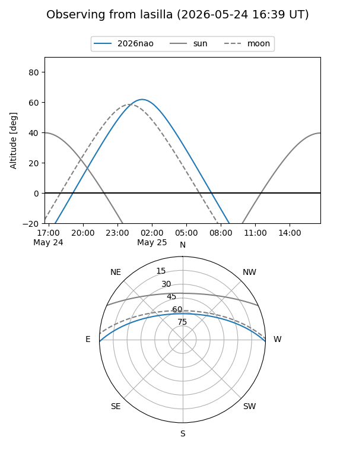
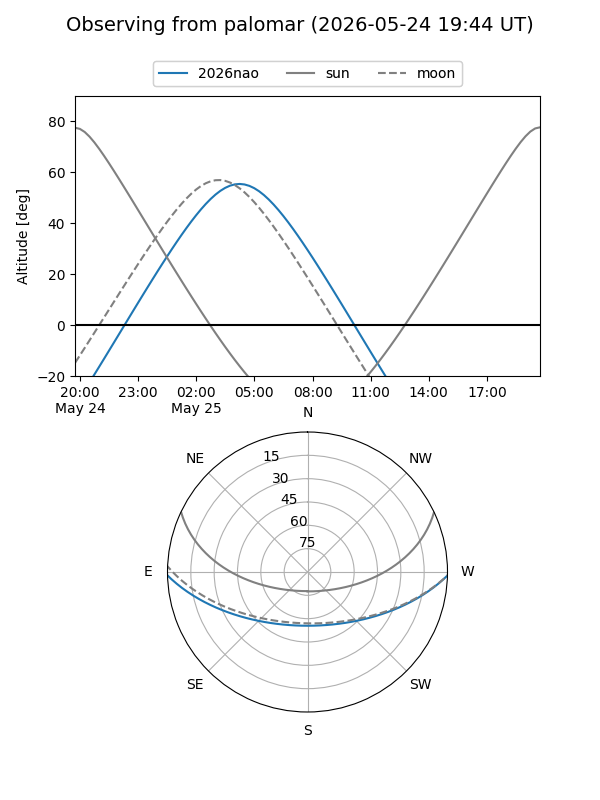
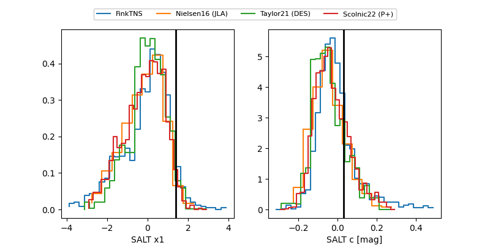

2026nao
Target 2026nao at 2026-05-25 05:32
Aliases and brokers:
lsst-FINK: link
lsst-Lasair: link
lsst-ALeRCE: link
ztf-FINK: link
ztf-Lasair: link
ztf-ALeRCE: link
TNS: link
YSE: link
alt names
ZTF26aaxalgu (ztf,fink_ztf)
2026nao (tns,yse)
Coordinates:
equatorial (ra, dec) = 188.9520,-1.04715
equatorial (HMS+DMS) = 12:35:48.49,-01:02:49.74
galactic (l, b) = (294.7027,+61.57461)
Flags:
Photometry:
last atlasc=19.60, ztfg=19.19, ztfr=19.27
1 atlasc, 5 ztfg, 1 ztfr detections
Lightcurve

Visibility


Additional plots
